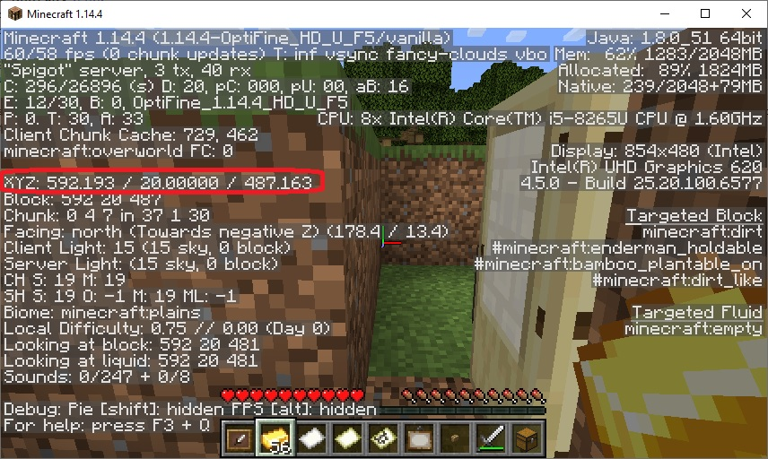
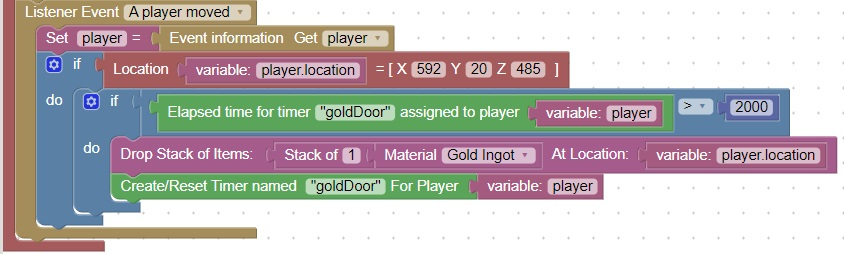

Add a precious metal drop to your world
Note: Perform an update as described here before attempting this homework (thanks).
This exercise is an extension of the topic discussed in class: Drop Methods
Add a precious metal drop to a doorway
First step is to give the player a precious metal item when they pass through a doorway.
You can determine the current location of a player by using F3 and looking at XYZ coordinate:

Also we will need to add a timer so that the player doesn't get "spammed" with precious metal
You can use this diagram as an example:
Note: Location = block will truncate (eliminate) the location.x, location.y and location.z numbers after the decimal point, so just use the integer part of the number.
